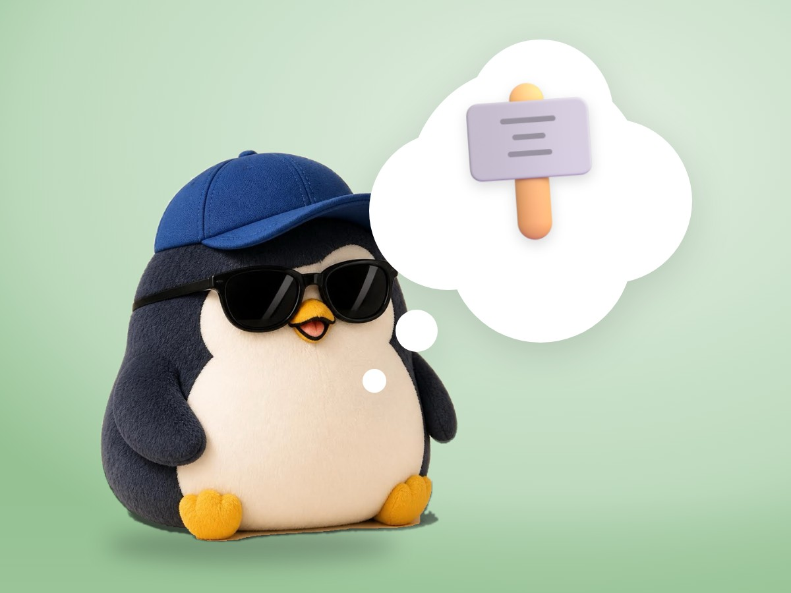

📝 DRAFT · 下書き — まだ本番に出していません · 下書き一覧
🐧 EVERYDAY LIFE⚡ 19 SEC
You cannot choose where you grew up, but you can choose how to live 🪧

Same House
There is a story about twins who grew up in the same hard home.
Two Answers
One said, "I grew up in that house, so of course I became like this." The other said, "That is why I decided not to become like that."
⚡ TRY IT
The fork in the road
You are Twin B. Where will you go?
The same house
TWIN A
Went with the flow🌧️ "It can't be helped."
TWIN B (YOU)
Which way?
Tap a road. You can change it any time.
🌻 "I will make my home a warm place."Same house. A different road. You chose it.
📚 "I will keep learning new things."Same house. A different road. You chose it.
💛 "I will be kind to the people around me."Same house. A different road. You chose it.
You Choose
You cannot choose where you grew up, but you can choose how to live from now.
📚 I learned this from the Japanese blog "Panda no Ondo".